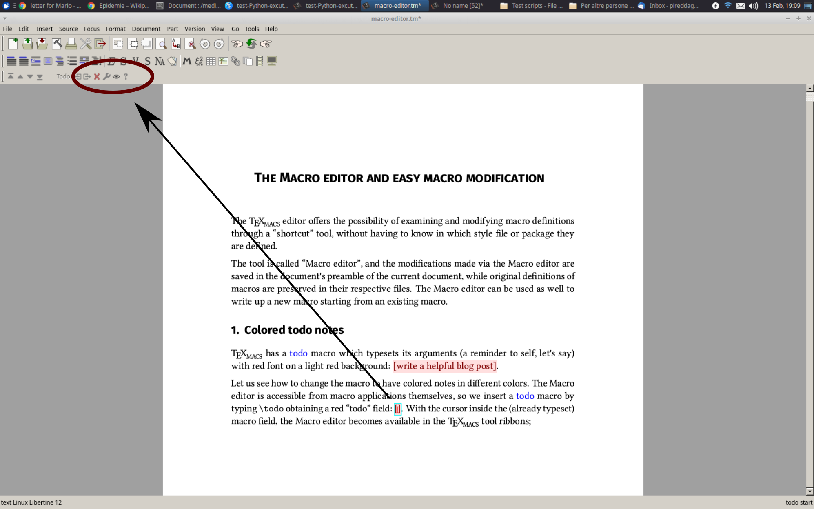
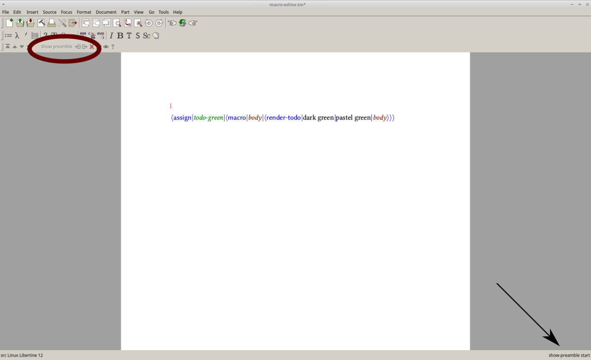

[main]Notes on TeXmacs
[main]Notes on TeXmacs
 [main]Notes on TeXmacs
[main]Notes on TeXmacs
The TeXmacs editor offers the possibility of examining and modifying macro definitions through a “shortcut” tool, without having to know in which style file or package they are defined.
The tool is called “Macro editor”, and the modifications made via the Macro editor are saved in the preamble of the current document, while original definitions of macros are preserved in their respective files. The Macro editor can be used as well to write up a new macro starting from an existing macro.
Let us examine two examples.
TeXmacs has a todo macro which typesets its arguments (a reminder to self, let's say) with red font on a light red background, surrounded by brackets: [write a helpful blog post].
Let us see how to change the macro to have colored notes in different colors. The Macro editor is accessible from macro applications themselves, so we insert a todo macro by typing \todo obtaining a red “todo” field: []. With the cursor inside the (already typeset) macro field, a button that invokes the Macro editor becomes available in the TeXmacs tool ribbons; in Figure 1 we highlight the “wrench” button.
|  |
Clicking on the wrench button a menu appears, and we select “Edit macro” (Figure 2); selecting “Edit source” would bring us to the location (package or style file) where the macro is defined.
Clicking on “Edit macro” brings up the “Edit
macro” window, the protagonist of this blog post (Figure 3).
Let us ignore in this blog post the menu items
The first view is the “text view”, where the macro is represented in typeset form (as in the text mode of TeXmacs); in this case it results in a todo note which displays the name of the variable in the macro definition ([body]). We are interested in the source so we select “Source” from the drop-down menu at the bottom left (Figure 4).
The macro now is represented in source mode and we can edit it (Figure 5).
We would like to have green todo notes. We identify
tentatively the two variables todo-color and
todo-bg-color as the color of the text and
the color of the background—it looks reasonable, and if this does
not work, we can check how the macro render-todo is
composed (in TeXmacs 1.99.18, which I am using to write this blog post,
a bug prevents one to do this for the macro render-todo
through the macro editor—the attempt makes TeXmacs crash—so
if you want to check that macro please use the
We can check the values of the environment variables (see Standard environment variables for a general discussion of the environment variables ) by typing them preceded by a backslash and pressing Return (for this we can either switch out of the macro editor and use the usual TeXmacs editor or we can set the macro editor to Text mode): todo-color evaluates to dark red and todo-bg-color to pastel red. Let us then substitute dark green and pastel green for them.
To type our new text in place of either todo-color or todo-bg-color, we first click four times onto it to select its name and the surrounding markup—clicking twice selects one of the words in the compound name of the variable (between hyphens), clicking three times selects the whole variable name without the value markup surrounding it—and then we type over it the text that we wish to: “dark green” (without the quotes) in place of todo-color and “pastel green” (likewise) in place of todo-bg-color.
In Figure 6 we show the effect of clicking three or four times on the environment variable. When clicking three times (shown on the left side of the image), the value markup surrounding the variable name is not enclosed in the selection, which in this case does not reach the focus frame, as shown in the magnified view on the bottom; when clicking four times (as in the right side of the image), the selection reaches the edge of the focus frame and encloses the value markup.
Clicking the
TeXmacs will save to the preamble the contents of the Macro editor window, so if one leaves the macro name as it is, the macro saved in the preamble is executed by TeXmacs in place of the original macro (while the original definition is not overwritten, the macro editor modifies only the current file). Changing in stead the name of the macro leaves the original definition in force—and one has a new macro with the new definition.
Let us then in our example change the macro name to todo-green, by clicking inside the todo field on top and typing, we will have then a new macro available—repeating ourselves, if we hadn't, the todo macro would have pointed to the new definition we are saving in our preamble, and in this case all of the todo fields would have become green, including the ones we had already written. You can see the edited macro in Figure 7.
Press
|  |
We can now use the new macro: [I would like to have blue notes too!] and ... [here is a blue todo note :-)] (to do this, I started again from a todo note and applied again the Macro editor).
For colors which do not have a name in TeXmacs, one can use HTML codes; if TeXmacs does not recognize a color name, it uses black.
In math mode the macro choice inserts a left brace that introduces a vertical list, represented with the help of a table.
Here it is, inserted by typing \choice Return inside a display math environment; we placed two elements inside it:
 |
(1) |
Using the Macro editor, let's build a new macro that places the brace on the right.
The first step is again placing the cursor in the macro input field (in the vector next to the brace in this case) and pressing the wrench key in the toolbar. The Macro editor window in this case shows the typeset macro in math mode (Figure 9).
The source mode representation of the macro is complex (Figure 10), but maybe we do not need to know what is the math-table-base macro, nor what are cell-swell and table-math-swell; let's try.
Let us notice the two paired delimiters <left|{> and <right|.>: we have to swap them. Of course, the left brace must become a right brace.
As a second step, let us guess that the macro math-table-base and the variables cell-swell and table-math-swell determine the placement of the “vector of choice” with respect to the brace. We do not know whether math-table-base distinguishes right from left in such a way that the placement of the vector with respect to a closing brace would be awkward with the default settings of cell-swell and table-math-swell, but—again—let us try and see what happens!
After swapping the position of the brace and the dot, the macro (which
we named choice-right) looks like in Figure 10.
We press
We have to test it now. Let us type \choice-right, then Return inside a display math environment, next to a choice and place the same two elements into both constructs:
| (2) |
The representation looks visually balanced, and we can keep the choice-right macro that we have written (and that now is in our preamble).
If we had not been happy, we would have had to figure out what the math-table-base macro does. Perhaps there too the first step could be looking at the macro in the Macro editor!
If you want to modify a macro, place your cursor into it and open it with the Macro editor. If you see a likely candidate to change, change it and look at the result: you might immediately achieve what you want.
If the macro looks too complex to be interpreted intuitively, or modifying it des not yield the result you expect, you can look for more detailed explanations in the manual; link to the manuals in various languages in pdf format are in the TeXmacs manuals webpage and the web version is at web manual.
You can also ask for help on
The texmacs-users mailing list (see instructions for subscribing at Mailing lists for TeXmacs)
The TeXmacs forum